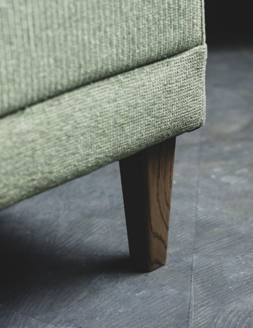
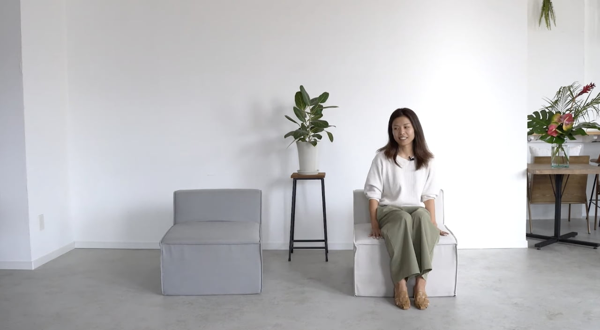
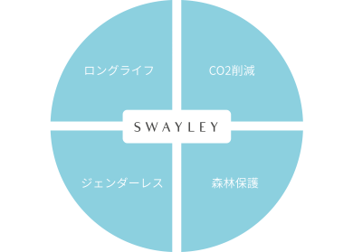
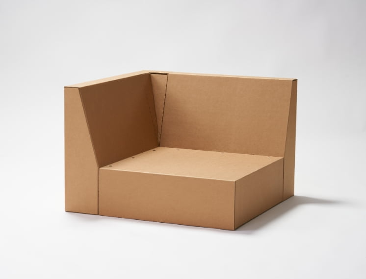

SWAYLAYは三重県にある30年以上にわたってクッション資材を製造・販売してきたウレタン⼯場から⽣まれました。
SWAYLAYが⽣まれたキッカケは、「あるもどかしさ」です。価格競争のためにコストを削減し、座り⼼地に最も⼤切であるはずのウレタンの品質が、あっさり犠牲にされていることに疑問を感じました。
最上級品質のウレタンを使ったソファの座り⼼地を、もっと多くの⼈に知ってほしい。
そのような想いから、すべて国内で製造し、妥協のないソファをつくり始めました。
すこし未来のソファ
Little futuristic sofa
SWAYLEY
Scroll Down
Story
すこし未来の
豊かな⽇常をつくる
つくり手からつかい手、
みんなの手で幸せな生活空間を
つくり出すという願いを込めた、
すこし未来の豊かな⽇常をつくる国内製高品質ソファ、SWAYLEY
SWAY＝『ゆらぎ』『波長』
LEY＝『耕す』
みんなの手で幸せな生活空間を
つくり出すという願いを込めた、
すこし未来の豊かな⽇常をつくる国内製高品質ソファ、SWAYLEY
SWAY＝『ゆらぎ』『波長』
LEY＝『耕す』

SWAYLEYStory : 01
よりお客さまの⽬線で、
本当にいいソファを
提供したい


SWAYLEYStory : 02
じっくりと丁寧に国内製造
「すこし未来のソファ」をカタチに
SWAYLAYは、フレームや生地、ウレタンに至るまで国内製造にこだわりました。
企画から製造まで2年の歳月をかけ、国内の製造工場が手と手をとりあい、『すこし未来のソファ』、SWAYLAYをカタチにしました。最上級品質のウレタンをふんだんに使用した、ずっと続く最上級の座り⼼地を、つかい手の皆様へ提供します。

Innovation5 revolutions
SWAYLAYソファに秘められた
「５つの⾰命」
Innovation1
『ちょっと座ってみて』と
勧めたくなる最高の座り心地


ちょっと
座ってみて
最上級のウレタンで実現した
理想の座り心地- 2種類の最上級ウレタンを組み合わせ、理想的な体圧分散を実現。Swayleyソファは、有名ブランドの最高級ソファにも用いられる最上級品質のウレタン２種をふんだんに使用しています。
自宅でも、オフィスでも
- ご自宅ではくつろぐ時間を贅沢なものにしてくれるアイテムとして、オフィスの応接室などでは、お客さまをもてなす最上級のアイテムとして、最上級品質のウレタンが実現する理想の座り心地を、ぜひ直接体験してみてください。
Innovation2
『ちょっと持ってみて』と
促したくなる、驚くほどの軽さ

ちょっと
持ってみて
強化段ボールを使用したフレームで軽くて丈夫
- Swayleyソファは、昨年開催された東京オリンピックでも話題となった強化ダンボールをフレームとして使っています。強化ダンボールの特長は、何よりもその強度と軽さです。従来の木材にまったく劣らない強度をもちながら、とても軽量なため女性やお子さまでもカンタンに持ち運びが可能です。面倒だったソファの下のお掃除も、気分しだいの模様替えも、Swayleyソファなら自由自在。木材やバネを使ったソファと違い、きしみ音がほとんど起こらないのも強化ダンボールのメリットです。
Innovation3
『居心地いいでしょ』と
言いたくなる、高い質感・デザイン

居心地
いいでしょ
空間づくりが自在に楽しめる上質なデザイン
- Swayleyソファは、レイアウトを自在にお楽しみいただくために、組み合わせ自由なモジュール型を採用しました。軽く持ち運びもしやすいので、その日の気分や空間の雰囲気に合わせて模様替えを手軽にお楽しみいただけます。シンプルかつ高級感のあるデザインを実現し、生地には心地よい手ざわりと見た目のエレガントさを両立した「アクアクリーン®︎」を採用。カラーは５色からお選びいただけます。ソファは使い捨てるものではなく、長くお使いいただくもの。だからこそ、くつろぎの時間を彩るアイテムとしての、日々の使い勝手を追求したい。
Innovation4
『これは魔法？』と
驚くほど イージーケアな生地

これは魔法？
きめ細やかな手触りとエレガントな質感「アクアクリーン®」
- Swayleyソファは、ちょっとした汚れなら水拭きだけでキレイに落とせる生地、「アクアクリーン®」を採用。水拭きで落ちない汚れがついても、ソファのカバーリングはカンタンに着脱可能。取り外してご自宅でお洗濯できます。小さなお子さまがいらっしゃるご家庭や、大人数で集まって楽しむ空間でも、気兼ねなくお使いいただきたい。この想いから、高級感だけでなくお手入れのカンタンさも兼ね備えた、選りすぐりの生地を採用しました。「水拭きだけで、魔法みたいに汚れが落ちる」「さらに、ご自宅でも手軽にお洗濯できる」この驚きのイージーケア素材の性能を、ぜひその目でお確かめください。
Innovation5
『ヘタりにくいから長く使える』
いつまでも最高の座り心地

長く使える
ヘタりにくくいつまでも最上級の座り心地
- Swayleyソファは、ただ座り心地がいいだけのソファではありません。ヘタりにくく、優れた座り心地がいつまでも続きます。ヘタったソファは底部のバネや木材のゴツゴツとした感触が気になり、心地よく座れなくなってしまいます。場合によっては、姿勢やカラダの歪みの原因となり、腰や背中を痛めてしまうおそれもあります。長く、安心して使い続けられるものをつくりたい。Swayleyソファは、ずっと続く最上級の座り心地で、いつまでも心地よい空間をご提供します。
SWAYLEY
PLAY MOVIE

Sustainabilityvision of the future
SWAYLAYに込められた
持続可能な未来ヴィジョン
マテリアルメーカーだからこそできる、
使いやすさと持続可能性の両⽅を⾒すえた持続可能なサイクル。

ロングライフ品質

SWEYLAYソファは、ソファの⼤部分を占めるフレームに、いま注⽬を浴びているサステナブル素材である強化ダンボールを使⽤しています。
強化段ボールの原料は再⽣紙のため、地球環境への負荷が少なく、コロナ禍によっていっそう加速した⽊材価格の⾼騰問題（ウッドショック）の打開策としても期待されています。
- 森林保護
- CO2削減
年齢問わず使⽤できる軽さ

今までのソファは、重量が重く、チカラのある⽅が運んでいました。
SWEYLAYソファは、従来の⽊材にまったく劣らない強度の強化ダンボールを使⽤しています。とても軽量なため⼥性やお⼦さまでもカンタンに持ち運びが可能です。
- ジェンダーレス
ロングライフ品質
通常のソファは、ある程度⾼価なものであっても平均3〜5年ほどでクッションにヘタりが⽣じてしまうものが多くあります。
SWEYLAYソファは、有名ブランドの最⾼級ソファにも⽤いられる最上級品質のウレタン2種をふんだんに使⽤し、⻑期間ヘタりにくく、何世代にもわたり使⽤していただけます。使い捨て社会のない、未来を⽬指します。
- ロングライフ
Sofa LINEUP5 Color Fabrics
選べる５⾊の⽣地カラー


SPEC
- Sofa Base
- W640×D780×H590 SH370 8.4kg
- Sofa Corner
- W640×D780×H590 SH370 11.8kg
- Ottoman
- W780×D780×H590 6.8kg
Other itemsInterior
SOFA TABLE
北海道の択伐されたサステナブルな楢材を敢えて使用しています。自然が生み出した表情のある木目をお楽しみいただけます。


SPEC
W620×D620×H40
CUSHION
ゆったりともたれて寛げる600サイズ。あると嬉しいちょうど良い450サイズの2種類ご用意しました。やわらかさにこだわったクッションがやさしく包み込んでくれます。


SPEC
- Cushion 600
- W600×D600×H180
- Cushion 450
- W450×D450×H140
SupportTo Customers
SWAYLAYソファを購⼊された⽅へ
◎本製品は ⽇本国内において設計、家庭⽤に規格された商品です。ご使⽤する際はお取り扱いに⼗分ご注意ください。業務⽤などでの使⽤については予め使⽤⽬的、条件などをご確認の上ご使⽤ください。
◎直射⽇光やストーブやエアコンなど電化製品の近くや⾼温・多湿の場所でのご使⽤は避けてください。⽕災や製品の変⾊・変形・破損等の原因になります。
◎湿度の⾼い場所や濡れた状態でのご使⽤は、カビ、におい等の発⽣の原因になります。⾵通しをよくしてご使⽤ください。
◎座⾯の上に⽴ったり、背もたれに乗ったり不安定な姿勢で使⽤しないでください。踏み台の代わりとして使⽤すると、⼤変危険です。転倒しケガや破損の恐れがあります。
◎移動の際は押したり引いたり引きずることで床に傷がついたり、脚部等が破損するおそれがあります。周りの安全を確認の上、本製品を必ず持ちあげて移動してください。
◎床⾯に対する保護はお客様の管理責任としてください。
◎本製品は平らな場所でご使⽤ください。傾斜、凹凸のある場所での使⽤は転倒しケガや破損の原因になります。
◎本製品はホルムアルデヒド等級の最上位規格を表す表⽰F☆☆☆☆基準にそってつくられていますが、 開梱後はしばらくの間梱包材に含まれる匂いなどが残っている場合がございます。換気をし、⾵通しの良い場所でご使⽤ください。
◎本製品の改造や不当な修理は絶対に⾏わないでください。
◎本製品のお⼿⼊れは、定期的に付着した埃などを取り払います。著しい汚れが付着した場合は、柔らかい布に中性洗剤を薄めた⽔を浸し、汚れを拭き取ったあと、乾いた布で拭き、⼗分に乾燥させてからご使⽤ください。濡れたまま使⽤するとカビの発⽣や、変形、変⾊等の原因になります。
◎本製品はカバーリング仕⽴てになっています。⽣活のスタイルに合わせて⽣地をご変更いただくことや、経年の変化に対し⽣地をご変更いただくことで⻑くご使⽤いただくこともできます。
お問い合わせは
ご購⼊された店舗へお願いします。